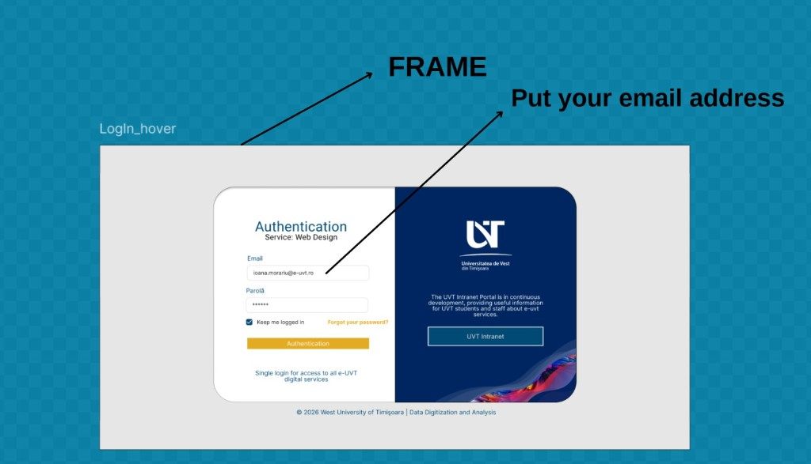
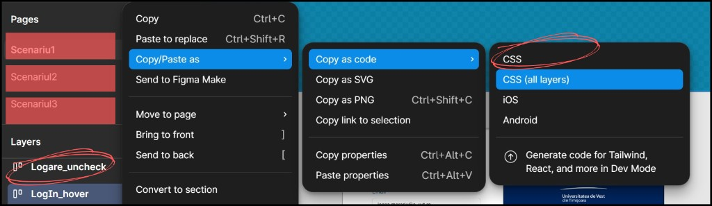
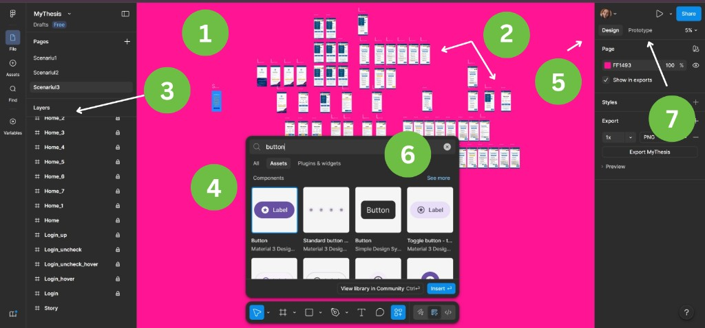

Lab 6 - Figma wireframing, design tokens, components, and layout systems
Duration: . This lab introduces UI planning in Figma and prepares your implementation workflow for upcoming homework and coding tasks.
On this page: UI vs UX · About Figma · Main Elements in Figma ·Figma Workflow ·Reusable Components ·Task 1 ·Task 2 ·Task 3 · Extra · References.
Overview
Objectives: Build a clean wireframe and define a minimal reusable design system.
Concepts: wireframing, type and color tokens, spacing scales, components, and layout systems.
Tasks: Create one key page wireframe, define token groups, and assemble reusable components (button/card/form field).
Deliverable: Upload to GitHub Classroom (assigned repository) a screenshot of the authentication page created in Figma and the extracted CSS code saved in a separate file.
UI vs UX – the essential difference
UI (User Interface) - refers to the visual part of an application: colors, buttons, fonts, spacing. It is what the user actually sees on the screen. For example, a well-designed, readable, and properly aligned button is part of UI.
UX (User Experience) - goes deeper and focuses on how the user interacts with the application. This includes logical flows, ease of navigation, clarity of actions, and process efficiency. For example, if a user can quickly find the login button and understands what they need to do, then the UX is well designed.
In short, UI is “how it looks,” while UX is “how it works and how it feels.” In Figma, these two dimensions come together: you design both the visual appearance and the interaction logic.
What is Figma?
Figma is a digital design tool focused on creating graphical interfaces and user experiences, widely used in the industry for web and mobile applications. Unlike traditional locally installed applications, Figma runs directly in the browser and allows real-time collaboration between multiple users, making it extremely efficient for teams.
From a conceptual standpoint, Figma is not just a “drawing tool”, but a complete working environment in which you can go through the entire design process: from simple sketches (wireframes), to detailed visual interfaces, and all the way to interactive prototypes that simulate the behavior of a real application.
Main Elements in Figma
To work efficiently in Figma, you need to understand a few fundamental concepts that form the basis of any project:
1. Canvas (workspace)
It is the central area where you actually build the design. Here you add frames, components, images, and text.
2. Frames
They represent screens or containers for interfaces (e.g., login screen, homepage). They are equivalent to “artboards” in other tools.
3. Layers
The hierarchical structure of all elements in the design. It allows you to organize and precisely select components.
4. Toolbar
It contains the main tools: Select, Frame, Shape tools (rectangle, circle, etc.), Pen, Text, and others. It also includes access to Assets and other essential design utilities used for building and managing components efficiently.
5. Properties Panel
Located on the right side, it controls details such as colors, sizes, fonts, effects, and positioning.
6. Assets / Components
A library of reusable components (buttons, cards, icons) that can be reused across multiple screens, ensuring consistency and efficiency.
7. Prototyping
The mode that allows you to connect screens and define interactions (clicks, transitions, navigation).

Figma Workflow
Open Figma and select New design file. This represents the main workspace where you will build your entire design project.
After creating the file, the next step is to work with frames. In Figma, you do not structure your project using multiple design pages, but rather multiple frames within the same file. Each frame typically represents a screen of the application (for example: login, home, profile, etc.), and the number of frames depends on how many screens you want to design.
For each frame, you set the size according to the target device. You can choose from Figma presets (mobile, tablet, desktop) or define custom dimensions manually. This helps you adapt the design to the real usage context.
After defining the frames, you start by creating the wireframe (rough structure). At this stage, you do not focus on aesthetics, but on organizing elements: where buttons, text, and images are placed, and how the logical flow of the screen is structured.
Next, you move on to the visual design (UI) stage, where you add colors, fonts, icons, images, and refine spacing and alignment. Essentially, you transform the simple structure into a complete and visually coherent interface.
As you build the interface, you also create reusable components (such as buttons, navigation bars, cards). These are saved as assets and can be reused across multiple frames, ensuring consistency and efficiency in the design process.
Finally, you can connect the frames using prototyping mode, in order to simulate real navigation between screens and test the user experience before implementation.
How to create a reusable element – the example of a button
In Figma, a reusable element (Component) allows you to reuse the same design element in multiple places throughout a project without recreating it each time. A very common example is a button.
The first step is to create the base button inside a frame or a dedicated components page. This is built using a rectangle (which represents the background) and a text element (for example, “Login” or “Submit”). The two elements are properly aligned to ensure consistent spacing and a clean visual structure.
After defining the base structure, you apply the necessary visual styling. This includes setting the background color, text color, font type, font size, corner radius, and, if needed, effects such as shadows or strokes. At this stage, you define the final appearance of the button.
Once the button is finalized, you convert it into a component. You select all its elements and use the “Create component” option or the corresponding shortcut. From this moment on, the button becomes a reusable design element.
The created component can be found in the Assets section and can be dragged and dropped into any frame. Each instance remains linked to the original component, meaning it preserves the same structure and styling.
A key advantage is that if you modify the original component, all instances used across the project are updated automatically. For example, if you change the button’s color, that change is reflected everywhere it is used.
Optionally, you can create variants of the same button, such as default, hover, or disabled states. These are grouped into a component set and make it easier to manage different UI states consistently.
Task 1 - Create Authentication Interface
In this task, you will create the authentication interface shown in the attached image using Figma. The project must be built using a main frame, which will represent the entire login page.
Inside this frame, you will reproduce the visual structure: the left side authentication area (the form with email and password fields, where users enter their email and password) and the right side informational panel, together with all text elements, logos, and buttons.
The focus should be on properly organizing elements within the frame, respecting the layout, and correctly aligning all components. Each section should be built in a modular way so that the interface structure is clear and easy to modify later. A logical layer hierarchy and consistent grouping of form elements are recommended.
An essential requirement of this task is the use of reusable components. Buttons (such as “Authentication” and “UVT Intranet”) must be created as components, so they can be reused in other pages or states of the application.

Task 2 - Figma to CSS Export Task
In this task, after completing the interface in Figma, you will extract the corresponding CSS styles from the created design. To do this, select the main frame that contains the entire authentication page, then use the right click → Copy/Paste as → Copy as Code → CSS option.
The generated CSS code should be analyzed and saved in a separate file in order to understand how Figma translates visual design into CSS properties. You should focus on identifying styles related to layout, colors, fonts, spacing, and dimensions, as well as how containers and interface elements are represented.
The purpose of this activity is to bridge the gap between the design created in Figma and its implementation in code, providing a practical understanding of how a UI can be transformed from a visual prototype into a usable CSS structure for web development.

Task 3 - Figma Task Submission
Submission requirement: Upload to GitHub Classroom (assigned repository) the following:
- A screenshot/image of the authentication page created in Figma
- The extracted CSS code saved in a separate file
Extra work
Extra work [1]: Complete exercises 14-1 and 14-2 from the primary textbook (see Resources - Bibliography [1] and Assignments).
References
Labs · Schedule · Course home